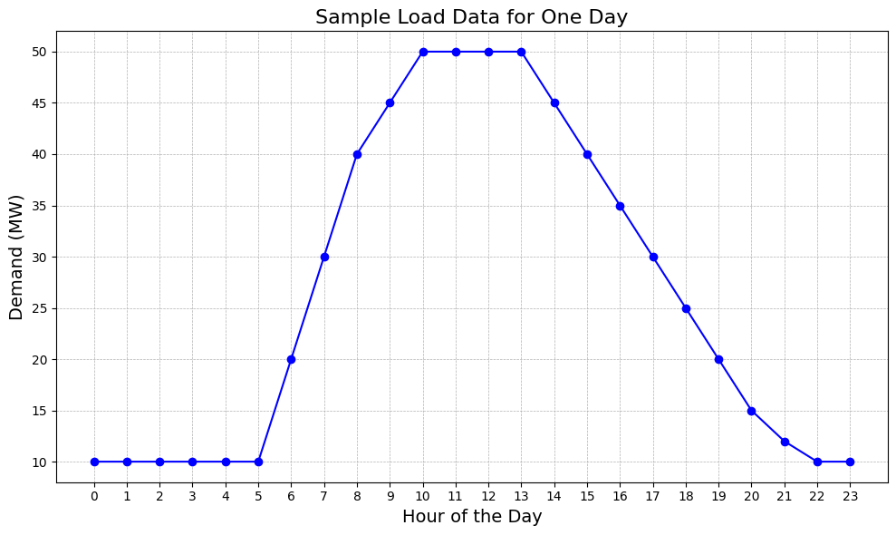
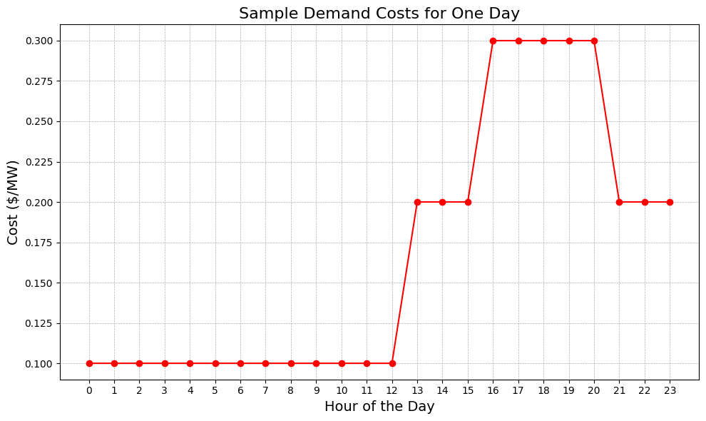
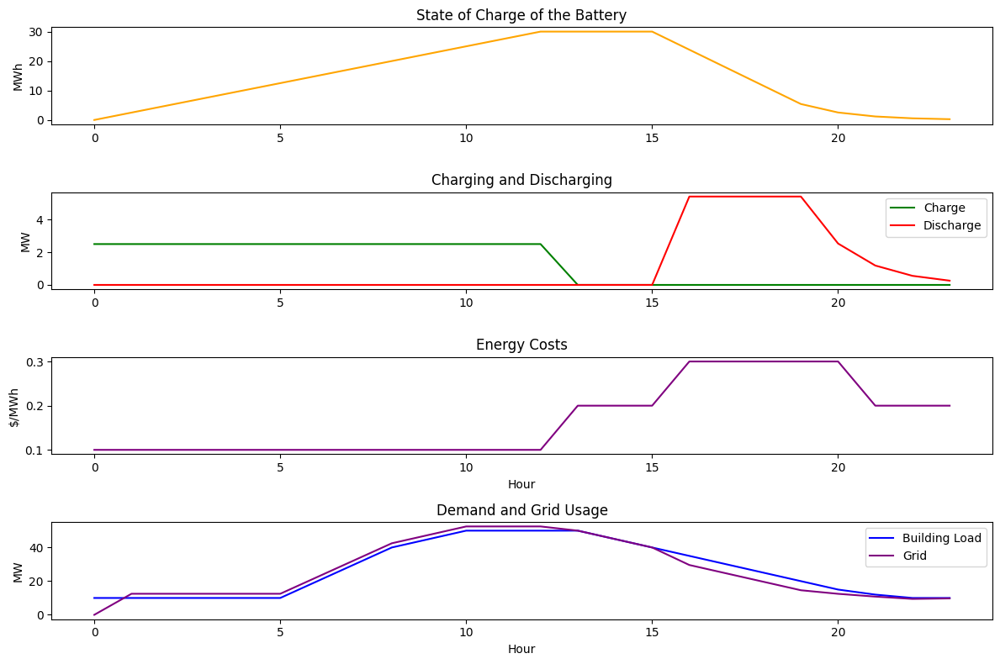

- Ct: the amount of energy (MWh) charged in hour t
- Dt: the amount of energy (MWh) discharged in hour t
- SOCt: the amount of energy (MWh) available in the battery in hour t
- Gridt: the amount of energy (MWh) drawn from the grid in hour t
Simulation of Energy Storage Systems - Mixed Integer Linear Program [WIP]
January 2024
Approximate reading time: 5 minutes
Follow along on my Github repo!
Intro & Motivation
My goal with this exercise was to deepen my understanding and refine my skills in simulating and optimizing battery energy storage systems. Particularly, I wanted to explore the PuLP python package and use it to develop a robust mixed integer linear program. My objective was to create a simulation for a battery energy storage system that is working behind-the-meter with a building load and responds to grid dynamic pricing over a 24 hour period. In this, I hope to demonstrate my understanding of mixed integer linear programs and the basic physics and engineering principles related to energy systems.
Background
Linear programming is a mathematical method used to find the best possible outcome, like the maximum profit or the lowest cost, for systems whos requirements are represented by linear relationships. In this case, I am minimizing the cost of energy for a building across a 24 hour period. When some of the variables are not continuous, but rather are binary, it adds a layer of complexity to the model known as mixed integer linear programming (MILP). The PuLP python package allows us to model these binary constraints, which make the problem non-convex and also potentially significantly more challenging to solve computationally.
In the world of energy storage, MILP becomes particularly powerful, because energy systems operate in a world that has both continuous variables like facility load and also binary variables like the decision to charge or discharge the battery at a given point in time. Typically, these behind-the-meter battery systems have to optimize based on energy prices, demand charges, and load requirements, and MILP allows us to simulate these systems in a way that mirrors real-life decisions.
Data Used
To set up this simulation, I first created sample building load data and then I set up the daily cost profile. For the building load data, I assumed that the building follows a typical commercial building load shape, with low demand in the late evening and early morning, but high demand from 12 PM - 5 PM. You can see the load curve here: 
Then, I created a sample tariff which, though not based on an actual tariff, is similar to tariffs you might find in California and other US states. In this tariff, the peak period, when the costs are greatest, is from 4 PM - 9 PM, and the partial peak period is three hours before and three hours after. All other hours are considered off peak hours. The demand costs for this tariff can be seen here: 
You'll notice that the on-peak period for the tariff occurs at a time when the building still has a relatively high demand load. The battery system will need to determine a good time to charge and then discharge based on these two profiles, subject to a number of physical constraints.
Formulation
Decision Variables
Parameters
- ESS_CAPACITY: the maximum battery capacity in MWh
- ESS_CHARGE_RATE: the maximum battery charge rate in MW
- ESS_DISCHARGE_RATE: the maximum battery discharge rate in MW
- RTE: the round trip efficiency of the battery in percent (%)
- demandt: the demand of the load at hour t (MWh)
- pricet: the cost of the energy at hour t ($/MWh)
Constraints
- 0 ≤ SOCt ≤ ESS_CAPACITY for t from 0-24
- 0 ≤ Ct ≤ ESS_CHARGE_RATE
- 0 ≤ Dt ≤ ESS_DISCHARGE_RATE
- Dt ≤ SOCt
- SOCt = SOCt-1 + Ct - Dt/RTE (accounting for RTE losses) for t from 0-24
- Dt + gridt ≥ demandt
- SOC0 = 0 initial boundary condition
- gridt = max(demandt - Dt, 0)
- Dt * Ct = 0 (*Note that I model this differently using binary decision variables, see below)
Objective
Minimize the cost of energy: min ∑ (gridt × pricet) for t from 0 to 24
In the final formulation, I also added a small penalty for switching, in order to emulate smooth charging and discharging behavior similar to that of a real-world battery:
switch_cost * ∑ persistent_charget for t from 1 to 24 + switch_cost * ∑ persistent_discharget for t from 1 to 24
The mathematical equations outlined above are translated into a computational model using PuLP. This translation is encapsulated within the BatteryOptimizationModel() class. The class is initialized with the __init__ function, which sets up the model environment and parameters. The optimization process is executed by the run_optimization function, which not only runs the optimization given the load and cost profiles but also checks the status of the optimization to ensure it runs successfully.
The decision variables are defined in the _define_variables private function, providing the model with the necessary variables to determine the optimal strategy. The objective function, representing the goal of minimizing the cost of energy, is added to the model in the _add_objective_function private function. Constraints that guide the optimization process are meticulously coded in the _add_constraints private function, ensuring that the solution adheres to the physical and operational limits of the battery system. Finally, the results of the optimization are extracted and organized into a pandas DataFrame by the _extract_results private function, facilitating further analysis and visualization. For more detail, see my Github page directly.
Methodology
The first step was creating my sample data. From there, I set out to identify all the decision variables and parameters that would be relevant to the optimization. I established the boundary conditions. Using the decision variables, I could write out the constraints, knowing that there are a number of physical limitations that govern energy systems. After coming up with these mathematically, it was a matter of codifying the process. To start, I created the BatteryOptimizationModel() class and established its functions, as stated above, to get organized. As I went through, I found that one of my constraints was non-linear, but I was able to model it with binary decision variables is_charging and is_discharging. I also added persistent charge and discharge variables as well as a switching cost to enable smooth charging/discharging, much like a real-world scenario, as batteries do not perform as well when their behavior is erratic. Once my class was created, I set about running the model and storing the results to a pandas dataframe. I tweaked as needed (such as by adding the switching cost function, and playing with it's value). Finally, I plotted the results. See below!
Results
The baseline cost was $105.40 and the total post-energy storage system cost was $99.75. Thus in 24 hours the battery saved the building $5.65, or 5.36% of it's energy costs.
The above graphs show the battery charging smoothly during the off-peak period, holding during the first partial-peak period, and then discharging smoothly through the on-peak and following partial-peak period. The battery discharges more aggressively during the on-peak period, as expected, but still continues to discharge what energy it has left for the final partial-peak period. This behavior seems both realistic and impressive! It is cool to see that my simulated ESS can save the building over 5% of its energy bill in one day. Obviously, this is a small example, but I would be curious to see how it would perform over longer periods of time.